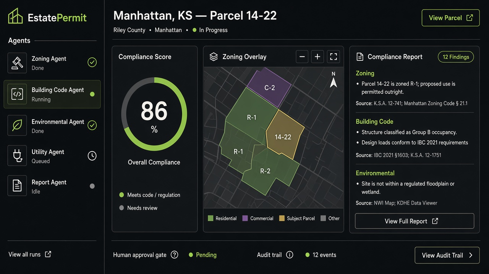

← All work
June 2026 — Present
EstatePermit
Industrial-scale permitting: five agents, cited reports, and a stack that can roll out city by city.
Python
FastAPI
React
TypeScript
Multi-agent AI
RAG

Problem
Permit packages fail when rules live in different places: zoning maps, building code, environmental constraints, and utility capacity. A single missed citation delays a filing. The work does not parallelize well for a human reviewer.
Approach
- Five agents analyze zoning, building code, environmental, and utility rules in parallel, then a report agent compiles the package.
- Jurisdiction knowledge packs feed retrieval so claims come with citations, not vibes.
- Human approval gates sit on the path to export. An audit trail records who signed what.
Architecture
FastAPI owns orchestration, retrieval, and audit. React owns review: agent status, findings, and the approval flow. The split is deliberate so a city can swap a knowledge pack without rewriting the UI.
Outcome
The system is built for multi-city rollout rather than a one-off demo: pack-based rules, cited output, and a human in the loop. Work is ongoing.